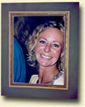

Välkommen till Key Creation inramningsdesign
Företaget ägs och drivs av Susan Key, GCF, inramningsdesigner.
Key Creations motto är kvalitet, kreativitet, kunskap och omsorg.
Jag har ca 15 års erfarenhet av branschen, utbildad i Sverige, Tyskland och England och diplomerad av Fine Art Trade Guild, FATG. Titeln GCF står för Guild Commended Framer.
På Key Creation utförs fackmannamässiga kvalitetsinramningar i alla prislägen med ödmjuk inställning till både kund och bild.